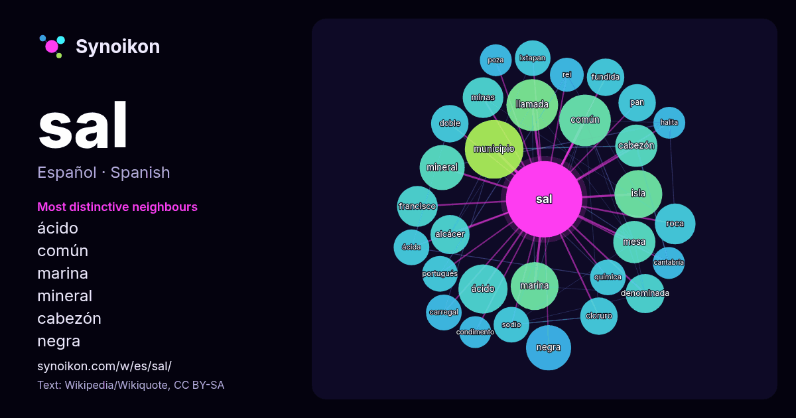

Español · lista de palabras del día
sal
“salt” · Las palabras encontradas a su alrededor en 878 apariciones de Wikipedia, Wikiquote.

Vecinos más característicos
- ácido 18×
- común 15×
- marina 15×
- mineral 15×
- cabezón 15×
- negra 15×
- llamada 14×
- mesa 13×
- alcácer 13×
- fundida 12×
- cloruro 12×
- minas 12×
- roca 12×
- carregal 11×
- ixtapan 11×
- denominada 11×
- ácida 11×
- pan 11×
- sodio 11×
- municipio 11×
× = cuántas veces más que en el texto general de Wikipedia.
Vecinos más frecuentes
- municipio 27
- común 21
- llamada 21
- ácido 19
- isla 18
- marina 18
- mineral 16
- negra 16
- san 16
- nombre 15
- cabezón 14
- mesa 14
- francisco 13
- minas 13
- roca 13
- tipo 13
- alcácer 12
- conocida 12
- conocido 12
- denominada 12
En contexto
- La sal común o sal de mesa, conocida popularmente como sal es un tipo de sal denominada cloruro de sodio (o cloruro sódico), cuya fórmula química es NaCl Wikipedia snippets · Sal común
- término sal, en esta enciclopedia, puede referirse a: Sal común, un condimento alimenticio usado desde la antigüedad. Sal kosher, de grano grueso. Sal marina Wikipedia snippets · Sal (desambiguación)
- todas las demás sales metálicas, alumbre, bórax, tártaro, sales vegetales esenciales, sal tártara y potasa, sal de orina volátil, salitre, sal común de manantial Wikipedia snippets · Sal (química)
- Una sal oxácida, u oxisal (también oxosal) es el producto de neutralización total o parcial de un ácido oxácido, es decir, de un ácido que contiene oxígeno Wikipedia snippets · Sal oxácida
- Cabezón de la Sal es una villa, capital municipal y municipio español de la comunidad autónoma de Cantabria. Es también la cabecera de la comarca de Saja-Nansa Wikipedia snippets · Cabezón de la Sal
- Poza de la Sal es un municipio y villa española de la provincia de Burgos, en la comunidad autónoma de Castilla y León. Forma parte del partido judicial Wikipedia snippets · Poza de la Sal
- La sal amoniacal, sal amoníaco, sal de amoníaco, salmiac, almohatre o almojáter, es el nombre que recibe el mineral con la composición química del cloruro Wikipedia snippets · Sal amoniacal
- sal de bahía, o sal solar. Al igual que la sal de roca extraída por minería, la producción de sal marina data de tiempos prehistóricos. Las sales marinas Wikipedia snippets · Sal marina
Más palabras
- agua
- arte
- bosque
- caballo
- camino
- campana
- canción
- ciencia
- ciudad
- clima
- comida
- corazón
- desierto
- dinero
- dios
- espejo
- estrella
- familia
- fuerza
- gato
- historia
- invierno
- isla
- jardín
- lengua
- lluvia
- madre
- mapa
- miel
- montaña
- muerte
- naturaleza
- oro
- otoño
- pan
- perro
- puente
- reloj
- salud
- silencio
- sombra
- tiempo
- tormenta
- trabajo
- tren
- té
- verano
- verdad
- vida
Precalculado el 2026-10-09 con los ajustes predeterminados (±5 palabras, corpus mediano). El mapa interactivo puede actualizarlo con datos en vivo.
Interfaz traducida automáticamente; se agradecen correcciones.